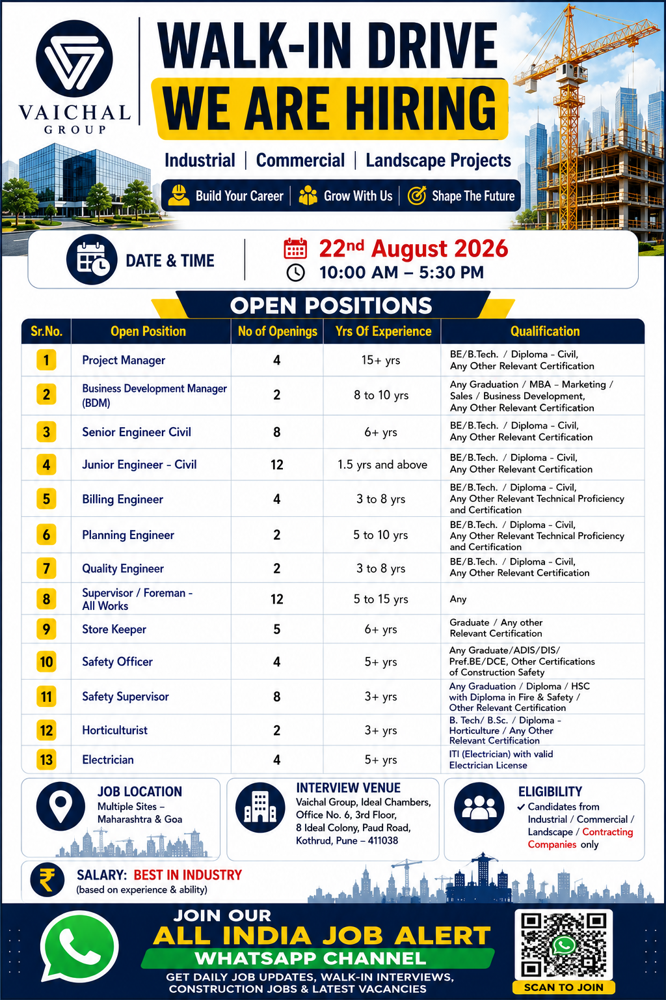

Vaichal Group has announced a Walk-In Drive for experienced professionals interested in industrial, commercial and landscape construction projects. According to the recruitment poster, multiple positions are available for candidates with different levels of experience and qualifications. The opportunities include Project Manager, Business Development Manager, Senior Civil Engineer, Junior Civil Engineer, Billing Engineer, Planning Engineer, Quality Engineer, Supervisor/Foreman, Store Keeper, Safety Officer, Safety Supervisor, Horticulturist and Electrician positions.
Company: Vaichal Group
Recruitment Type: Walk-In Drive
Project Category: Industrial, Commercial & Landscape Projects
Job Locations: Multiple sites across Maharashtra & Goa
Interview Date: 22nd August 2026
Interview Time: 10:00 AM – 5:30 PM
Salary: Best in industry, based on experience & ability
Vaichal Group is conducting a walk-in recruitment drive for professionals who have experience in construction and related project activities. The recruitment covers several technical, engineering, management, safety, commercial and support positions. Candidates with relevant industry experience can attend the interview according to the date and time mentioned in the recruitment information.
The vacancies are particularly suitable for candidates who have experience in industrial, commercial, contracting and landscape-related projects. The recruitment poster also indicates that candidates from industrial, commercial, landscape and contracting companies are eligible to consider these opportunities.
Candidates should carefully check the experience requirement for their preferred position before attending the interview. Different vacancies require different levels of professional experience, ranging from around 1.5 years for Junior Engineer – Civil to 15+ years for Project Manager.
Date: 22nd August 2026
Time: 10:00 AM to 5:30 PM
Job Locations: Multiple Sites – Maharashtra & Goa
Interview Venue: Vaichal Group, Ideal Chambers, Office No. 6, 3rd Floor, 8 Ideal Colony, Paud Road, Kothrud, Pune – 411038
Openings: 4
Experience: 15+ years
Qualification: BE/B.Tech/Diploma – Civil or relevant certification.
This position is suitable for senior construction professionals who have extensive experience managing projects, coordinating teams, monitoring construction progress and handling project execution.
Openings: 2
Experience: 8–10 years
Qualification: Graduate/MBA – Marketing/Sales/Business Development
or relevant certification.
Candidates should have experience in business development, client coordination, sales, project opportunities and relationship management.
Openings: 8
Experience: 6+ years
Qualification: BE/B.Tech/Diploma – Civil or relevant certification.
Civil engineering professionals with strong site execution experience and knowledge of construction activities can consider this vacancy.
Openings: 12
Experience: 1.5 years and above
Qualification: BE/B.Tech/Diploma – Civil.
This opportunity can be considered by relatively junior Civil Engineering professionals who have practical construction-site experience.
Openings: 4
Experience: 3–8 years
Qualification: BE/B.Tech/Diploma – Civil or relevant
technical proficiency and certification.
Billing professionals should ideally have experience with measurements, quantity calculations, contractor billing, documentation and project commercial activities.
Openings: 2
Experience: 5–10 years
Qualification: BE/B.Tech/Diploma – Civil or relevant
technical proficiency and certification.
Openings: 2
Experience: 3–8 years
Qualification: BE/B.Tech/Diploma – Civil or relevant certification.
Openings: 12
Experience: 5–15 years
Qualification: Any.
Experienced supervisors and foremen who have handled construction teams and site activities can consider this position.
Openings: 5
Experience: 6+ years
Qualification: Graduate or relevant certification.
Openings: 4
Experience: 5+ years
Qualification: Graduate/ADIS/DIS/Preferred BE/DCE
or other construction-safety certifications.
Openings: 8
Experience: 3+ years
Qualification: Graduation/Diploma/HSC with Diploma
in Fire & Safety or relevant certification.
Openings: 2
Experience: 3+ years
Qualification: B.Tech/B.Sc/Diploma – Horticulture
or relevant certification.
Openings: 4
Experience: 5+ years
Qualification: ITI Electrician with valid electrician license.
Candidates should have qualifications and professional experience relevant to the position they wish to apply for. Engineering positions generally require Civil Engineering qualifications, while specialised roles such as Horticulturist and Electrician require relevant technical qualifications.
Candidates should also have practical experience in their respective fields. Construction professionals should be comfortable working at project sites and coordinating with engineers, supervisors, contractors, clients and other project teams.
According to the recruitment poster, the job locations include multiple project sites across Maharashtra and Goa. Candidates should therefore be prepared for project-based deployment depending on the requirement of the organisation.
Applicants who are comfortable working at industrial, commercial, contracting or landscape project sites may find these opportunities suitable. Candidates should confirm the exact project location and employment conditions during the recruitment process.
The recruitment poster mentions that salary will be best in industry and will depend on the candidate's experience and ability. The exact salary package may therefore vary according to designation, professional experience, technical skills and project requirements.
Candidates are advised to discuss salary, benefits, working hours, accommodation, travel arrangements and other employment conditions directly during the recruitment process before accepting an offer.
Interested and eligible candidates should attend the walk-in interview on 22nd August 2026 between 10:00 AM and 5:30 PM.
Candidates should carry an updated CV and the latest photograph. Applicants should also carry relevant educational certificates, experience documents and identification documents wherever required.
Apply Through: hr@vaichal.com
Interview Venue:
Vaichal Group, Ideal Chambers,
Office No. 6, 3rd Floor,
8 Ideal Colony, Paud Road,
Kothrud, Pune – 411038
Contact: 9850007996
Email: hr@vaichal.com
Phone: +91 9850007996
Candidates should reach the interview venue within the specified interview timing and should carry all necessary documents. Applicants should mention the exact position they are interested in and should provide accurate information about their qualification and experience.
Candidates should carefully verify the job role, project location, salary, employment terms and other conditions before joining. Selection will depend on the recruiter's eligibility requirements and interview process.
Job seekers should be careful about fraudulent recruitment requests. Never share sensitive banking information, OTPs, passwords or other confidential information with unknown persons. Verify any payment request or recruitment communication before making a payment.
The recruitment covers a broad range of positions, making it relevant to professionals from different areas of construction and project management. Civil engineers, planning professionals, billing engineers, quality professionals, safety personnel, supervisors, store keepers, horticulture professionals and electricians can check whether their experience matches one of the listed vacancies.
Professionals with experience in industrial and commercial construction may benefit from project exposure and multidisciplinary coordination. Candidates who are willing to work at project sites across Maharashtra and Goa can consider attending the walk-in interview.
Vaichal Group's Walk-In Drive provides multiple opportunities for experienced construction professionals. With vacancies ranging from Project Manager and Business Development Manager to Civil Engineers, Billing Engineers, Planning Engineers, Quality Engineers, Safety professionals, Supervisors, Store Keepers, Horticulturists and Electricians, candidates from different backgrounds can check their eligibility.
Interested candidates should prepare their updated CV, latest photograph and relevant documents and attend the interview on the scheduled date. Before joining, candidates should independently confirm the final job terms, salary, project location and employment conditions with the recruiting organisation.
Get the latest construction jobs, walk-in interviews, private jobs, engineering vacancies and career updates directly on WhatsApp.
JOIN WHATSAPP CHANNELFollow our WhatsApp channel for daily job alerts and new recruitment notifications.
👉 JOIN NOW